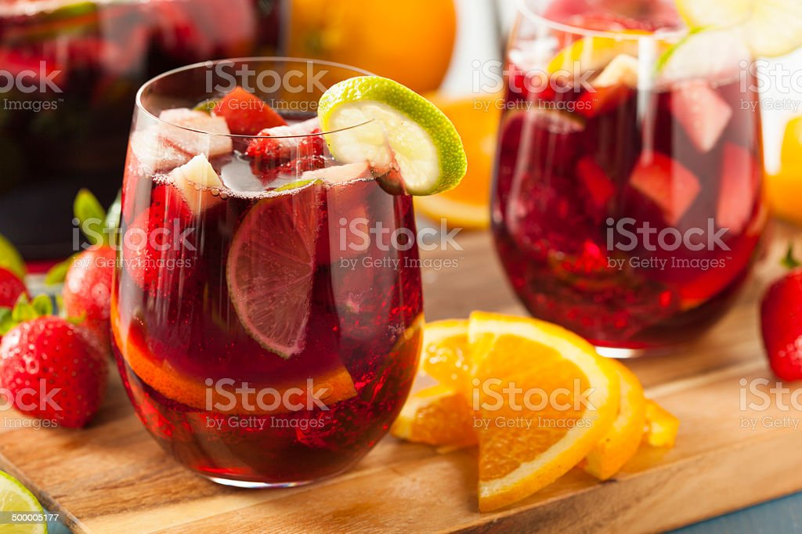

Spanish Sangria!

What is the best wine for sangria?
Learn how to make authentic Spanish sangria with this easy sangria recipe. It only takes a few minutes to prep, it’s easy to customize with your favorite wine and fruit, and it’s great for entertaining a crowd!
Spanish Sangria Ingredients
- Spanish red wine
- Brandy
- Fresh chopped fruit
- Cinnamon stick
- Sweetener
- Bubbles
Steps
- Chop your fruit: Dice the orange, lemon and green apple into evenly-sized pieces.
- Chop your fruit: Dice the orange, lemon and green apple into evenly-sized pieces.
- (Optional) Add sweetener: If you prefer a sweeter sangria, feel free to add in a tablespoon or two of sweetener at a time until the sangria reaches your desired level of sweetness.
- Cover and refrigerate: Pop the pitcher in the fridge for at least 30 minutes or up to 4 hours before serving, in order to let those flavors meld together.
- Serve: Then serve the sangria over ice, topping off each glass with a splash of bubbly soda (or sparkling water) if desired.